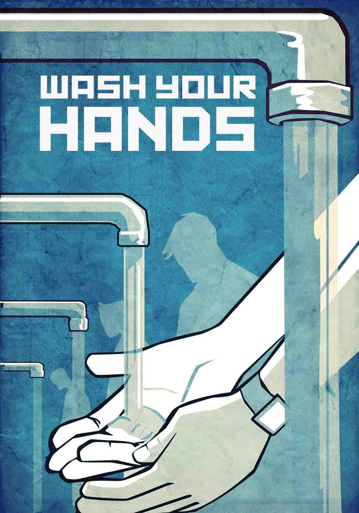

Hand-washing reduces the spread of the flu, food poisoning, stomach bug, and other illnesses.
Fun fact: humans touch their hands to eyes, nose, or mouth about 15 times an hour. And hand-to-face contact accounts for about 30% of the risk of flu infection.
Plain old soap and warm water gets germs off your hands. Use warm water and plenty of suds.
Hand sanitizer with at least 60% alcohol — that's the magic number — is just as effective. Keep some at home and work, and carry it with you.
